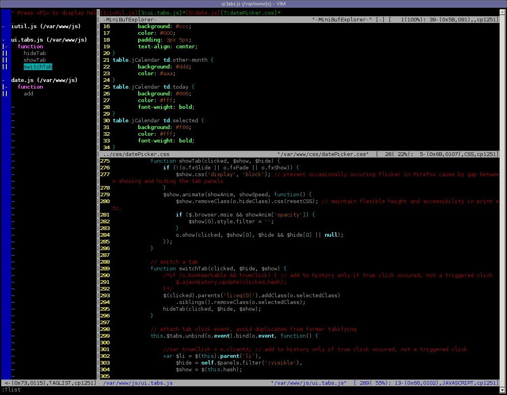
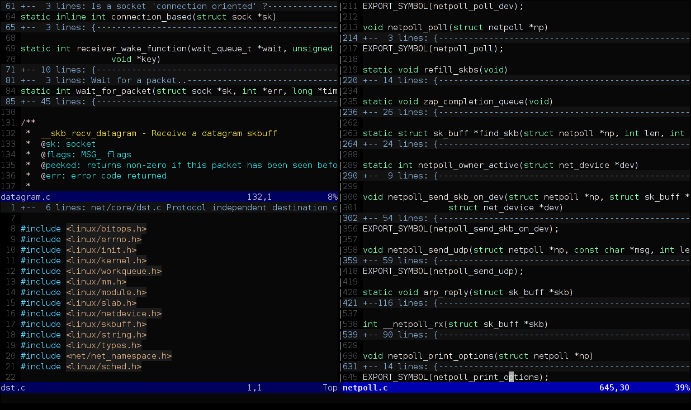

Vim
— свободный текстовый редактор, созданный на основе более старого vi. Ныне это мощный текстовый редактор с полной свободой настройки и автоматизации, возможными благодаря расширениям и надстройкам.Пользовательский интерфейс Vim’а может работать в чистом текстовом (консольном) режиме.
Существует и модификация для использования в графическом оконном интерфейсе — GVim. Многие пользовательские команды в GVim могут вызываться через соответствующие пункты меню.
Награды
С 2001 по 2004 гг. Vim являлся победителем устраиваемого LinuxJournal конкурса Readers' Choice Awards в категории «Любимый текстовый редактор». Он также получал награды Linuxworld Editors' Choice Award в 1999 и Slashdot Beanie Award в 2000.Основное отличие от «классических» текстовых редакторов
Одна из главных особенностей редактора — применение двух основных, вручную переключаемых, режимов ввода: командного (после запуска редактор находится в нём) и текстового (англ. insert mode, режим непосредственного редактирования текста, аналогичный большинству «обычных» редакторов). Существуют и другие режимы.Vim не интуитивен (кроме «текстового» режима), так что эффективная работа с редактором требует предварительного обучения.
Лицензия
Vim распространяется по GPL-совместимой лицензии известной как Charityware (англ. charity — благотворительность). Часть средств, пожертвованных на разработку Vim, тратится на поддержку сирот Уганды посредством организации ICCF Holland.| Дата | Версия | Изменения |
|---|---|---|
| 1988 год | 1.0 | Основан на Stevie для Amiga, названный Vi IMitation, никогда официально не выходил. |
| 2 ноября 1991 года | 1.14 | Первая общедоступная версия для Amiga |
| 1992 год | 1.22 | Портирован в Unix. Теперь Vim конкурирует с vi. С этого момента Vim стал Vi IMproved |
| 12 августа 1994 года | 3.0 | Поддержка разбиения окон |
| 29 мая 1996 года | 4.0 | Графический пользовательский интерфейс |
| 19 февраля 1998 года | 5.0 | Подсветка синтаксиса, простой язык сценариев (определяемые пользователем функции, команды и т. д.) |
| 6 апреля 1998 года | 5.1 | Исправление ошибок и другие изменения. |
| 27 апреля 1998 года | 5.2 | Поддержка длинных строк, встроенный файловый браузер, диалоги, всплывающие меню, select mode, файлы сессий, определяемые пользователем функции, команды, tcl-интерфейс и другие изменения. |
| 31 августа 1998 года | 5.3 | Исправление ошибок и другие изменения. |
| 25 июля 1999 года | 5.4 | Простое шифрование файлов, различные улучшения |
| 19 сентября 1999 года | 5.5 | Исправление ошибок, различные улучшения |
| 16 января 2000 года | 5.6 | Новые файлы синтаксиса, исправление ошибок и другие изменения |
| 24 июня 2000 года | 5.7 | То же |
| 31 мая 2001 года | 5.8 | То же |
| 26 сентября 2001 года | 6.0 | Сворачивание, плагины, многоязычность и другие изменения |
| 24 марта 2002 года | 6.1 | Исправление ошибок |
| 1 июня 2003 года | 6.2 | GTK2, поддержка арабского, команда: try, minor features, исправление ошибок |
| 7 июня 2004 года | 6.3 | Исправление ошибок, обновление переводов, улучшения меток |
| 15 октября 2005 года | 6.4 | Исправление ошибок, обновления поддержки Perl, Python и Ruby |
| 7 мая 2006 года | 7.0 | Проверка правописания, автодополнение, вкладки («tab-ы»), подсветка текущей строки и столбца, undo branches, и другие изменения |
| 12 мая 2007 года | 7.1 | Исправление ошибок, новые исполняемые файлы и файлы синтаксиса, и другие изменения |
| 9 августа 2008 года | 7.2 | Исправление ошибок, новые исполняемые файлы и файлы синтаксиса, улучшение безопасности и другие изменения |
| 15 августа 2010 года | 7.3 | Исправление ошибок, новые исполняемые файлы и файлы синтаксиса, улучшение безопасности, «вечный» undo, прекращение поддержки Mac OS 9 и GTK1, поддержка Lua и другие изменения |
| 10 августа 2013 года | 7.4 | Новый, более быстрый движок для поддержки регулярных выражений и другие изменения |
| 12 сентября 2016 года | 8.0 | Асинхронный ввод/вывод, лямбда-выражения, замыкания, поддержка GTK+ 3 и Microsoft DirectX, а также другие изменения. |
| 18 мая 2018 года | 8.1 | Поддержка открытия терминала внутри окна Vim |
| 14 декабря 2019 года | 8.2 | Всплывающие окна |
| 28 июня 2022 года | 9.0 | Vim9 script |
|Режимы работы|
Нормальный режим
По умолчанию Vim начинает свою работу в нормальном режиме, который также называют командным. Нажатие клавиш в этом режиме воспринимается как команды (копирования, удаления, перемещения текста и т. д.).Среди команд нормального режима есть «односимвольные» команды. Так, например, нажатие $ приведёт к перемещению курсора в конец строки; нажатие клавиши 0 (ноль) — в начало; D (в верхнем регистре) — к удалению (delete) части текущей строки от текущего положения курсора до конца; С (в верхнем регистре) — к замене (change) части текущей строки от текущего положения курсора и до конца и т. д.
Другие команды для своей работы будут ждать дальнейшего продолжения ввода. Например f ответственно за быстрое перемещение в строке к следующему набранному после себя символу. Поэтому после нажатия f Vim будет ждать набора этого символа, чтобы использовать его в качестве искомого.
После нажатия y (yank), d, c и других подобных «управляющих» клавиш Vim будет ожидать дальнейшего ввода команд, задающих объект, над которым будет произведено действие (копирование, удаление или замена соответственно). Так, daw удалит текущее слово под курсором (delete ambient word), а d$ — все символы начиная с текущего положения курсора и заканчивая концом строки.
Подобные очень простые команды используются не только в «ручном режиме» (когда при необходимости набираются всякий раз с клавиатуры), но и при задании сложных последовательностей действий.
Нормальный режим — это центральный режим, из которого осуществляется переход во все остальные. Из любого режима в командный режим можно перейти, дважды нажав клавишу Esc (в большинстве случаев достаточно одного нажатия).
Режим вставки
Режим вставки (англ. insert mode), в котором производится ввод текста.Для перехода из командного режима в режим вставки можно нажать i (для начала вставки текста на месте курсора) или a (для начала вставки текста после курсора). Также существует ряд других клавиш и их сочетаний для перехода в режим непосредственного редактирования текста (например, через одну из команд замены текстового объекта).
В этом режиме Vim работает так же, как и большинство «обычных» текстовых редакторов. По умолчанию набранные символы не воспринимаются как команды, а вставляются в существующий текст. Однако даже в этом режиме можно задать особые действия редактора, выполняемые при нажатии определённых клавиш или их сочетаний. Как пример, можно задать, чтобы при наборе открывающейся скобки ( сразу же добавлялась парная ей закрывающая скобка и курсор устанавливался между ними.
Для вставки, удаления, изменения и автодополнения текста также могут использоваться клавиатурные сочетания (Ctrl+R и др.)
При наборе слова-аббревиатуры это слово автоматически заменяется на заранее заданный текст.
Визуальный режим
Изменение блока текста в визуальном режиме Визуальный режим отсутствовал в Vi и впервые появился в Vim. Он чем-то схож с командным. С помощью специальных управляющих команд, в сочетании со стрелками и командами навигации, можно посимвольно, построчно или в виде блока выделять фрагменты текста и затем применить к ним команды нормального режима (например, удаление выделенного текста или его замена).Редактирование в этом режиме проще, чем в нормальном, потому что чётко видно, к какому блоку текста будет применяться вызванная команда редактирования.
|Функциональность|
Обзор: избранные улучшения vi В сравнении с классическим vi Vim отличается следующими улучшениями:
|
Справочная система Vim Vim имеет весьма удобную и подробную справочную систему, и систему навигации и перехода между её разделами. Чтобы открыть любой её раздел, достаточно воспользоваться командой :help в командном режиме.
Автоматизация операций
Способность Vim различать текстовые объекты (слова, предложения, параграфы, строки, отдельные символы и т. д.) позволяет задавать последовательность действий для автоматизации определённых операций.Так, после команды
nmap <F7> byei<<ESC>ea</<C-R>0><ESC>
нажатие F7 преобразует (в командном режиме) любое слово под курсором (вне зависимости от его длины и символов, из которых он состоит) в xml-тег. К примеру если текущее слово под курсором — div, то оно будет преобразовано в <div></div>, если transform — то в <transform></transform> и т. д.
Vim способен на гораздо более сложные преобразования, можно задавать и свои функции для преобразования данных и автоматизации рутинных операций. Все действия, которые осуществимы в Vim «вручную» (то есть непосредственно человеком с клавиатуры) могут быть автоматизированы (включая переключение между различными режимами).
Портируемость
Одно из достоинств редактора Vim — доступность для множества операционных систем. Это особенно актуально для системных администраторов, которым приходится редактировать файлы на разных платформах.Vim работает на следующих операционных системах:
VimTouch
Для ОС Android, использующей сенсорный экран как основное устройство ввода, Дэвид Тао написал адаптированную версию vim — vim touch, в настоящее время распространяемую на условиях лицензии Apache. Также существует вариант DroidVim.Интерфейс программы
 